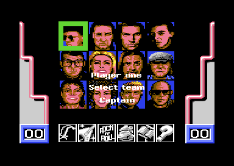
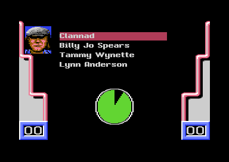

<meta charset="utf-8">
<meta name="viewport" content="width=device-width, initial-scale=1">
<title>Mike Read's Computer Pop Quiz</title>
<link rel="preconnect" href="https://fonts.googleapis.com">
<link rel="stylesheet" href="https://fonts.googleapis.com/css2?family=Lato:wght@400;700;900&family=IBM+Plex+Mono:wght@400;500&display=swap">
<style>
:root{
  --bg:#23262d; --paper:#e9e7e1; --surface:#ffffff; --surface-2:#f1efea; --line:#d5d3cc; --line-soft:#e0ded8;
  --ink:#2f3136; --ink-soft:#55585f; --ink-mute:#80838a;
  --link:#1f5fa8; --link-hover:#154480; --accent:#1f5fa8;
  --amber:#c25a00; --cyan:#1f5fa8; --coral:#d04a3a; --green:#2a8a4a; --violet:#4a5bd6; --hl:#fff0c2;
  --chip:#2f3136; --chip-ink:#ffffff;
  --c64blue:#40318d; --c64grey:#686868;
  --fd:'Lato',system-ui,sans-serif; --fb:'Lato',system-ui,sans-serif; --fm:'IBM Plex Mono',ui-monospace,Menlo,monospace;
  --col:1080px; --gx:68px; --fs:17px; --lh:1.6; --hw:900; --h1:46px; --h2:26px; --sy:48px; --pp:26px; --r:10px;
  --plate-shadow:0 1px 2px rgba(0,0,0,.05),0 4px 14px rgba(0,0,0,.05);
}
*{box-sizing:border-box}
html{background:var(--bg);min-height:100%}
body{background:var(--paper);color:var(--ink);font-family:var(--fb);font-size:var(--fs);line-height:var(--lh);max-width:var(--col);margin:0 auto;min-height:100vh;padding:0 0 4rem}
h1,h2,h3{font-weight:var(--hw);letter-spacing:-.01em;text-wrap:balance;color:var(--ink);margin:0}
.wrap{padding:0 var(--gx)}
.hero{padding:48px var(--gx) 8px;text-align:left}
.eyebrow{font-family:var(--fm);font-size:12px;letter-spacing:.08em;text-transform:uppercase;color:var(--ink-mute);margin:0 0 10px}
.hero h1{font-size:var(--h1);line-height:1.15;letter-spacing:-.02em;margin:0 0 14px}
.hero .sub{margin:0 0 .6em;color:var(--ink-soft)}
section{padding:var(--sy) 0 24px}
section:last-of-type{border-bottom:none}
.fig{font-family:var(--fm);font-size:12px;letter-spacing:.08em;text-transform:uppercase;color:var(--ink-mute);margin:0 0 10px}
h2.t{font-size:var(--h2);margin-bottom:12px}
.lede{color:var(--ink-soft);margin:0 0 30px}
.plate{background:var(--surface);border:1px solid var(--line);border-radius:var(--r);padding:var(--pp);box-shadow:var(--plate-shadow)}
.cap{font-size:14px;color:var(--ink-mute);margin-top:14px;line-height:1.55}
.cap b{color:var(--ink);font-weight:700}
code{font-family:var(--fm);font-size:.82em;background:var(--chip);color:var(--chip-ink);border-radius:4px;padding:2px 6px;overflow-wrap:break-word;-webkit-box-decoration-break:clone;box-decoration-break:clone}


.pq-cv{image-rendering:pixelated;display:block;background:#000;border:6px solid #000;border-radius:4px;width:100%;height:auto}
.pq-sheet{margin-top:14px}
.pq-bar{display:flex;flex-wrap:wrap;gap:8px;align-items:center;margin:12px 0 0;font-family:var(--fm);font-size:13px}
.pq-bar button,.pq-bar select{font:inherit;background:var(--surface-2);border:1px solid var(--line);border-radius:6px;padding:5px 10px;cursor:pointer;color:var(--ink)}
.pq-bar input[type=text]{font:inherit;flex:1 1 220px;min-width:0;padding:5px 8px;border:1px solid var(--line);border-radius:6px}
.pq-faces{display:grid;grid-template-columns:repeat(auto-fill,minmax(96px,1fr));gap:12px}
.pq-face{margin:0;font-family:var(--fm);font-size:12px;color:var(--ink-soft);text-align:center}
.pq-face canvas{margin-bottom:4px}
.pq-tbl{border-collapse:collapse;font-size:14px;width:100%}
.pq-tbl th,.pq-tbl td{border-bottom:1px solid var(--line-soft);padding:5px 8px;text-align:left;vertical-align:top}
.pq-tbl th{font-family:var(--fm);font-size:12px;color:var(--ink-mute);font-weight:500}
.pq-scroll{overflow-x:auto}
.pq-two{display:grid;grid-template-columns:1fr 1fr;gap:12px}
.pq-two img{width:100%;height:auto;image-rendering:pixelated;border-radius:4px;display:block}
.pq-two .cap{grid-column:1/-1;margin-top:2px}
@media (max-width:640px){.pq-two{grid-template-columns:1fr}}
.pq-steps{display:grid;grid-template-columns:repeat(16,1fr);gap:4px}
@media (max-width:640px){.pq-steps{grid-template-columns:repeat(8,1fr)}}
.pq-step{font-family:var(--fm);font-size:12px;padding:6px 0;border-radius:4px;border:1px solid var(--line);cursor:pointer;color:var(--ink)}
.pq-team0{background:#dbe7f6}.pq-team1{background:#f6e2d6}
.pq-step.on{outline:2px solid var(--ink);outline-offset:1px}
.pq-q{font-family:var(--fm);font-size:13px;background:var(--surface-2);border-radius:6px;padding:10px 12px;margin:10px 0 0;white-space:pre-wrap;overflow-wrap:anywhere}
</style>
<!-- tabs -->
<header class="hero">
  <p class="eyebrow">1988 · Elite Systems</p>
  <h1>Mike Read's Computer Pop Quiz</h1>
  <p class="sub">A television pop quiz on a cassette: 1,275 multiple-choice questions packed into five blocks that load during play, a show of 32 steps, and a computer opponent that knows the right answer three times in four, but only while it is losing.</p>
</header>
<main class="wrap" data-part="title">

<section id="game"><p class="fig">01 · The game</p><h2 class="t">A pop quiz show with two teams of three</h2>
<p>Mike Read's Computer Pop Quiz is the home version of <i>Pop Quiz</i>, the television pop quiz Mike Read presented. One player plays against the computer, or two players play against each other. Each side picks a specialist subject from six (Pop, Rock, Rock 'n' Roll, Country &amp; Folk, Classical and Mystery) and a team of three from twelve pop stars' faces: a captain and two members. Its loading picture credits Elite Systems &ldquo;in conjunction with MPC Games Ltd.&rdquo;</p>
<p>Mike Read then runs the show. He asks each question in a speech bubble that scrolls across the screen, and the team whose turn it is picks one of four answers before a clock runs out. A wrong answer, or no answer, is offered to the other team for a bonus point. After six rounds the team with more points wins.</p>
<div class="plate pq-two">
<p class="cap">Left, picking a captain from the twelve faces, with the six subjects below. Right, four answers and the clock (screenshots of the game in VICE).</p></div>
</section>

<section id="music"><p class="fig">02 · Music</p><h2 class="t">Music: one tune, until a question block loads</h2>
<p class="lede">The game has one tune, by Mark Cooksey. It plays from the menu until a question block is loaded, and never again after that.</p>
<div class="plate"><div id="pq-music"></div>
<p class="cap">The player runs the game's own music driver on the kit's 6502 over the listing's bytes, once a frame, as the raster interrupt calls it (<code>music_play</code>, <code>$4C03</code>, after <code>music_init</code> at <code>$4C00</code> with A = 0). It was checked against the game's code run on the whole of its memory in the simulator: the same writes to the sound chip, in the same order, for 14,000 frames. The filter is the 6581 chip's.</p></div>
<p>The tune is 13,536 frames long on each of its three voices, 4 minutes 31 seconds, and loops. Each voice reads a track of two-byte notes (pitch, then length and instrument) and commands that call patterns, transpose them, slide and set the filter (<code>$5425</code>, <code>$549F</code>, <code>$5664</code>). The tracks call 20 of the 25 patterns at <code>$5824</code>; patterns 0, 6, 9, 11 and 20 are never played.</p>
<p>The driver's tail sits at <code>$4F00</code>-<code>$53FF</code>, which is exactly where every question block loads its sound effects. So once a block is in, the interrupt plays the effects instead (<code>$0691</code>-<code>$069C</code>), and the music is gone until the game is loaded again.</p>
</section>

<section id="sound"><p class="fig">03 · Sound</p><h2 class="t">Sound: eleven effects, seven of them played</h2>
<p class="lede">Each question block brings its own sound-effects player with eleven effects. The game calls seven of them.</p>
<div class="plate"><div id="pq-fx"></div>
<p class="cap">The effects code that every block loads at <code data-part="quiz">$4F00</code>, run on the kit's 6502: <code data-part="quiz">fx_init</code> (<code data-part="quiz">$5095</code>), then <code data-part="quiz">fx_start</code> (<code data-part="quiz">$4FCB</code>) with the effect and voice the game's own calls load, then <code data-part="quiz">fx_frame</code> (<code data-part="quiz">$4F00</code>) once a frame. The wrong-answer buzz is effects 1 and 2 together on two voices, as the game plays it (<code>$3131</code>-<code>$3138</code>). The bass of the wrong answer is below 120 Hz, which laptop and phone speakers barely play.</p></div>
<p>The game calls <code data-part="quiz">fx_start</code> nine times, each after loading the effect and the voice as numbers (<code>$09FF</code>, <code>$0D7F</code>, <code>$2F68</code>, <code>$2FB8</code>, <code>$30E0</code> and the two pairs for a wrong answer). Effects 0, 7, 9 and 10 appear in none of them. Effect 0 is a single silent step; 7, 9 and 10 are finished sounds that nothing plays: an alternating bass and treble, a slow hiss of almost six seconds, and a run of rising chirps.</p>
</section>

<section id="show"><p class="fig">04 · The show</p><h2 class="t">A game is 32 steps, read from two tables</h2>
<p class="lede">The whole show runs from one list: 32 steps, each a team and a routine. Press a step to see what it does.</p>
<div class="plate"><div id="pq-steps" class="pq-steps"></div><p id="pq-step-out" class="pq-q">Step 0</p>
<p class="cap">The team of each step from <code>step_team</code> (<code>$3362</code>) and its routine from <code>step_routine_lo</code>/<code>hi</code> (<code>$338E</code>/<code>$33AE</code>); the show's loop reads them at <code>$2D1F</code> and <code>$2D24</code>.</p></div>
<table class="pq-tbl"><thead><tr><th>Round</th><th>Steps</th><th>What a team does</th><th>Points</th></tr></thead><tbody>
<tr><td>The Jukebox</td><td>0-5</td><td>chooses a number from 1 to 12 and answers a question on the subject behind it</td><td>2</td></tr>
<tr><td>Spot the Star</td><td>6-7</td><td>names a star from up to three clues</td><td>3, 2 or 1</td></tr>
<tr><td>Your Scene</td><td>8-13</td><td>chooses Easy, a question on its own subject, or Hard, on another</td><td>1 or 2</td></tr>
<tr><td>Name the Year</td><td>14-15</td><td>names a year from up to three events</td><td>3, 2 or 1</td></tr>
<tr><td>The Quickfire Round</td><td>16-24</td><td>nine questions on one clock for both teams</td><td>2</td></tr>
<tr><td>The final Jukebox</td><td>25-30</td><td>the six numbers left over from the first</td><td>2</td></tr>
</tbody></table>
<p>The points are the operands of two <code>ADC #</code> instructions, one for each team (<code>$30F4</code>, <code>$3102</code>), which each round writes before a question. A wrong answer or a time-out passes the question to the other team for 1 point (<code>$3029</code>-<code>$3099</code>). In the Quickfire Round there is no second chance: a wrong answer gives the other team a point at once, and when the clock runs out the round ends (<code>$3125</code>-<code>$3162</code>).</p>
<p>In the two clue rounds the clock gives a team three tries: each time it runs out, the next clue appears, the four answers are shuffled again and the prize drops by a point (<code>$2FC6</code>-<code>$2FDD</code>). Spot the Star shows no picture of the star it asks about; the screen shows the asking team's captain (<code>$2DA4</code>-<code>$2DC4</code>).</p>
</section>

<section id="question" data-part="quiz"><p class="fig">05 · A question</p><h2 class="t">Each question is built from a record and a list of 126 words</h2>
<p class="lede">A question block holds 256 records. The game builds the question text and the four answers from a record each time it asks one. Choose a record of block 1 to see it built.</p>
<div class="plate"><div class="pq-bar"><button type="button" id="pq-q-prev">◀</button><input id="pq-q-n" type="range" min="0" max="255" value="0"><button type="button" id="pq-q-next">▶</button><span id="pq-q-label">question 0</span></div>
<p class="pq-q" id="pq-q-raw"></p><p class="pq-q" id="pq-q-text"></p><div id="pq-q-ans" class="pq-q"></div>
<p class="cap">The record is block 1 as the quiz part's listing holds it. The page runs the game's own <code data-part="">build_question</code> (from <code>$3416</code>) and the part of <code data-part="">build_answers</code> from <code>$3AF6</code> to <code>$3C02</code> on the kit's 6502, and shows what they write: the question at <code data-part="">$B500</code> and the four answers at <code data-part="">$1BBA</code>. The words in the record are shown in square brackets, as the word list holds them.</p></div>
<p>A record is the question, then the right answer, each ended by <code>$FF</code>, then four bytes: a flags byte and three question numbers (<code>$B80F</code>). The wrong answers are the right answers of those three other questions, so every answer the game offers is the answer to some question in the block. The flags byte could take a wrong answer from a separate list of spares instead, but every record in the five blocks leaves it at 0, and none of the blocks carries the list.</p>
<p>To save space, a byte from <code>$80</code> up stands for a word from the block's list (<code>$B802</code>, 126 words); <code data-part="">build_question_text</code> puts the words in with a space either side (<code data-part="">$3439</code>). The questions use "(" and ")" round song titles, and the bubble's font draws those as quotation marks. The block's header gives the first record of each subject (<code>$B804</code>-<code>$B80A</code>), so the records are grouped Pop, Rock, Rock 'n' Roll, Country &amp; Folk, Classical, Mystery. Every question of the five blocks, built this way, is on the <a href="questions.html">Questions</a> tab.</p>
</section>

<section id="jukebox"><p class="fig">06 · The Jukebox</p><h2 class="t">Twelve numbers hide six subjects, twice each</h2>
<p>At the start of a game the twelve numbers of the Jukebox are shuffled over the six subjects, two numbers each (<code>$287F</code>). Choosing a number asks a random question of its subject that has not been asked yet (<code>pick_question</code>, <code>$2C72</code>); once played, the number's ball shows the subject's icon. The first Jukebox uses six numbers and the final Jukebox the other six.</p>
<p>The picker draws a random question of the subject's group and tries again if a bit for it is set in a table of 256 bits (<code>asked_questions</code>, <code>$1DC1</code>). Two slips make questions come round again sooner than they should; they are on the <a href="discoveries.html">Discoveries</a> tab.</p>
</section>

<section id="computer"><p class="fig">07 · The computer</p><h2 class="t">The computer knows the answer only when it is behind</h2>
<p class="lede">In a one-player game the computer plays the second team. It does not read the question: it is told which slot holds the right answer and decides how often to take it.</p>
<table class="pq-tbl"><thead><tr><th>Score</th><th>The computer's answer</th><th>Chance it is right</th></tr></thead><tbody>
<tr><td>Player one ahead</td><td>the right answer 192 times in 256; otherwise a random slot other than player one's choice</td><td>about 3 in 4 or more</td></tr>
<tr><td>Level, or the computer ahead</td><td>a random slot other than player one's choice</td><td>1 in 4 on its own question; 1 in 3 on a bonus question player one got wrong</td></tr>
</tbody></table>
<p>The rule is in <code>cpu_answer_decide</code> (<code>$0936</code>), which compares the two scores (<code>$38A6</code>, <code>$38A7</code>) and reads the right answer's slot (<code>$3506</code>). In Your Scene it takes Hard when it is behind and chooses at random otherwise. Before it decides, it moves its cursor 8 to 11 times at random, so it looks as if it is thinking.</p>
<p>So the computer plays a rubber band: a player who pulls ahead meets an opponent that is suddenly well read, and a player who falls behind meets one that guesses.</p>
</section>

<section id="controls"><p class="fig">08 · Controls</p><h2 class="t">One routine reads both players, stick or keyboard</h2>
<p>Player one uses a joystick in port 1, or W, X, A and D to move and S to choose; player two uses port 2, or @, /, : and = to move and ; to choose. One routine reads whichever player's turn it is: it writes the right port's address into its own instruction (<code>$1C9C</code>, operand <code>$1CA9</code>) and tries the keyboard only when the stick reads nothing. Because the keyboard's row 7 is selected while port 1 is read, SPACE, 1, the left arrow, CTRL and 2 also work for player one as fire, up, down, left and right.</p>
<p>The game looks at the stick only now and then, so a press has to be held for a moment to count.</p>
</section>

<section id="blocks"><p class="fig">09 · Question blocks</p><h2 class="t">The questions load from the cassette in five blocks</h2>
<p>The 1,280 records do not fit in memory with the game, so the cassette holds them as five blocks of four files each: the sound effects, and three files of questions, clues and word lists. After the teams are introduced, the game asks for a block number from 1 to 5 and reads the tape until it finds that block's files, which Novaload knows by name (<code>block_choice</code>, <code>$2927</code>). One block lasts four games: the counter <code>games_left</code> (<code>$2B90</code>) is set to 3 after a load (<code>$2AE0</code>) and counted down by each new game, and each game uses two of the block's eight Spot the Star and two of its eight Name the Year items.</p>
<p>The block's files fill <code>$B800</code>-<code>$FEFF</code>, over the menu's code, which the game needs no more. The first file loads at <code>$E000</code> and the game copies it to <code>$D000</code>, the memory under the video and sound chips, with the chips switched out (<code>$01</code> = <code>$34</code>, <code>$2A4C</code>-<code>$2AD7</code>); the last loads at <code>$E000</code> after it. The game reads the questions with the ROMs and the chips switched out in the same way (<code>$3404</code>-<code>$3414</code>).</p>
</section>

<section id="play"><p class="fig">10 · Play</p><h2 class="t">The whole game, rewritten in JavaScript</h2>
<p>The <a href="play.html">Play</a> tab runs the game from the moment the loader hands over: the menu, the teams, a question block loaded from the "tape" and the show. Every routine of the listing is written out again in JavaScript on the game's own memory, and only the music and the sound effects run as the game's 6502 code. <code>test_play.js</code> runs the port beside the game's code on the kit's model of the C64, for one player and for two, and compares the two memories and the chips at every step of the show.</p>
</section>
</main>
<script src="../../lib/sid.js"></script>
<script src="../../lib/cpu6502.js"></script>
<script src="../../lib/c64.js"></script>
<script>
/* createDriver */
function createDriver(M, C64Cpu) {
  // Mike Read's Computer Pop Quiz's own sound code run on the kit's 6502 (C64Cpu, which sid.js hands to
  // createDriver). M.m0-M.m3 are the music's bytes as the listings hold them: $33FF-$3401 (the SID offsets of the
  // three voices), $4C00-$4EFF (the driver), the menu part's $4F00-$53FF (the driver's tail, variables and
  // instruments) and $5400-$5B4E (the tune). M.f1 is $4F00-$532E of the quiz part: the sound effects code and its
  // eleven scripts, which every question block loads over the music's tail. M.fx gives each button after the
  // first the calls the game makes: pairs of effect and voice, as the ldx #/ldy # before each jsr $4FCB.
  // Button 0 is the tune: music_init ($4C00, A = 0) as irq_setup calls it, then music_play ($4C03) once a frame,
  // as the raster interrupt does while no block is loaded. The others run fx_init ($5095), as irq_setup does once
  // a block is loaded (it silences the voices and sets the volume to 15), then fx_start ($4FCB) for each pair,
  // then fx_frame ($4F00) once a frame. With M.fxOnly set, button n is effect button n + 1, for a player of the
  // effects alone. stop() does what the game does: the tune is stopped by the block loader's lda #0 / sta $D418
  // ($2A4E-$2A53), an effect by fx_init.
  const mem = new Uint8Array(0x10000), sid = new Uint8Array(25);
  let writes = [], carry = [], kind = 'music', on = false;
  const cpu = new C64Cpu.CPU(mem, { port: 0x35, io: {
    read: () => 0,
    write(a, v) { if (a >= 0xD400 && a <= 0xD418) { sid[a - 0xD400] = v; writes.push(a - 0xD400, v); } },
  } });
  const load = (a, hex) => { for (let i = 0; i < hex.length / 2; i++) mem[a + i] = parseInt(hex.substr(i * 2, 2), 16); };
  const put = (r, v) => { sid[r] = v; writes.push(r, v); };
  return {
    init(n) {
      if (M.fxOnly) n++;                     // the effects player's buttons are 1-10
      mem.fill(0); sid.fill(0); writes = []; carry = [];
      if (n === 0) {
        kind = 'music';
        load(0x33FF, M.m0); load(0x4C00, M.m1); load(0x4F00, M.m2); load(0x5400, M.m3);
        cpu.call(0x4C00, { a: 0 });
      } else {
        kind = 'fx';
        load(0x4F00, M.f1);
        cpu.call(0x5095, {});
        for (const [x, y] of M.fx[n - 1]) cpu.call(0x4FCB, { x, y });
      }
      carry = writes.slice(); on = true;
    },
    stop() {
      writes = [];
      if (kind === 'music') put(24, 0); else cpu.call(0x5095, {});
      carry = carry.concat(writes); on = false;
    },
    play() {
      writes = carry; carry = [];
      if (!on) return;
      cpu.call(kind === 'music' ? 0x4C03 : 0x4F00, {});
    },
    sid, get writes() { return writes; },
    playing: () => on && (kind === 'music' ? mem[0x50C6] !== 0 : (mem[0x50BE] | mem[0x50BF] | mem[0x50C0]) !== 0),
    voice(x) {
      if (kind === 'music') return { running: true, at: mem[0x50CA + x] | mem[0x50CD + x] << 8 };
      const e = mem[0x50BB + x];
      return mem[0x50BE + x] ? { running: true, effect: e } : { running: false };
    },
  };
}
const PQ_SOUND = {"m0":"00070e","m1":"4c2552a5fb48a5fc48adc650d0034c984fa2028ec350bdff338dc450bce8508cc550bdf450f016def450d011bd0051d00c8d0351b98d52acc4509904d4deee50bdee50f064c901f0034c8a4dbdca5085fbbdcd5085fca000b1fb3007c96090034c9f4f8dc050297f187d06519de550c8b1fb48c88cc250290fa8b95f529df150b96f529df750682ec0506a4a4a4a9deb50a9009dfa50adc2501865fb9dca50a5fc69009dcd504c314fbdeb509de8508dc550a8bdfa50f0034c554db9b7529d1451b9c5529d1751b9e1529d1d51b9ef529d2051b9fd529d2351b90b539d2651b91953290f9d2f51b943539d3b51a9009d1a519d29519d2c519d32519d38519d3e519d4c51a9019d0351bd4651f019bde550dde2509de2509007a9019d4c51d01aa9029d4c51d013bde5509de250a8b965519d0e51b9c5519d1151acc550aec450b99b529d05d4b9a9529d06d4b97f529d04d4aec350bdf1509dee50bdf7509df450bdfa509dfd50ac4151301bb913543dc750f013bd0051d00eb916548d4251a9008d44518d43514c314facc550b9d352f039de1d51d00eb9e1529d1d51bd1a5149019d1a51bd1a51d012bd14511879d3529d14519015fe17514ccb4dbd145138f9d3529d1451b003de1751b9ef52f04dbd2651f005de26511043de2351d019b9fd529d2351bd295149019d2951bd2c51d006fe2c511e2051bd2951d011bd0e517d20519d0e519015fe11514c1d4ebd0e5138fd20519d0e51b003de1151b91953f04cde2f51d047b9195348290f9d2f51684a4a4a4aa8b95f538d464eb96a538d474ebc3251b9454ec97fd008a9009d3251a8f0f1fe3251187de2509d3551a8b965519d0e51b9c5519d1151acc550b92753f03dbd3851d95153f005fe3851d030de3b51d02bb943539d3b51bd3e5149019d3e51d00fb927531d0351acc4509904d44cb04eb935531d0351acc4509904d4acc550bd4651f079bd4c51f074c901d039bd0e51187d46519d0e51bd11517d49519d1151bce250bd1151d9c5519052bd0e51d96551904ab965519d0e51b9c5519d1151a9009d4c51f037bd0e5138fd46","m2":"519d0e51bd1151fd49519d1151bce250bd0e51d96551b019bd1151d9c551b011b965519d0e51b9c5519d1151a9009d4c51acc450bd0e519900d4bd11519901d4bd14519902d4bd17519903d4ca30034c134cae41511004a9f0d03aad4451dd1c54d00da9008d4451ad435149018d4351ee4451ad4351d00dad4251187d19548d42514c8f4fad425138fd19548d42518d16d4bd13548d17d46885fc6885fb60c96bf01a38e960aabd4f518dbb4fbd5a518dbc4faec350c88cc2504cba4fa9008dc6508d04d48d0bd48d12d44c984fb1fbc88cc250a8b95f529df150a9019dfa504c964cbd005149019d00514c584cb1fb8d0d51c84c584cb1fb8d0c510d45518d18d4c84c584cb1fb9d0951c8b1fb48c8b1fb9d0651c8981865fb9dd050a5fc69009dd35068a8b91d5b85fb9ddc50b9365b85fc9ddf50a0004c584cbd0951f011de0951f00cbddc5085fbbddf5085fcd00fbdd05085fbbdd35085fca9009d0651a0004c584cbdd6509dca50bdd9509dcd50a9009d06514c4c4cb1fb9dca50c8b1fb9dcd504c4c4cb1fb9d4951c8b1fb9d4651c84c584cb1fb8d4151c88cc250a8b910548d45510d0c518d18d4b916548d4251a9008d44518d4351acc2504c584c000000000000000102040000000000000000000000000000000000000000000000000000000000000000000000000000000000000000000000000000000000000000000000000000000000000f00000000000000000000000000000000000000000000000000000000000000000000000000000000000000000000000000000000ff00000000000000000000000000cee3eef70c063b657987964f4f4f4f505050505050501627284b5f738aa1bad4f00e2d4e7196bde7134274a9e01b5a9be22c7bce2785e851c137b437c457f59c4e09d0a3826e686e88afeb399c13a14604dcd0dc105ed6723826428c08b8a0b820bcace4704c848110704070407858c8e0980830202e0101010101010101010101020202020202020303030303040404040505050606060707080809090a0a0b0c0d0d0e0f10111213141517181a1b1d1f20222427292b2e3134373a3e4145494e52575c62686e757c838b939ca5afb9c4d0ddeaf8fd8d2b520a186900aaa000bd1f5499ca5099d650bd225499cd5099d950a90299ee50e8c8c003d0e3a217a9009d00d4ca10faa90f8d18d48dc65060030406090c12182430486090c008102002020406090c12182430486090060a1c418121212121212121412121414140802020202020202040101040400a0a07070707070749540e0e2929f6a4242424242424f99c8e8e7c7c000000000000000000000000000002080000000000000004000002024000000000000000001000000808400000000000000000800000404000000000000000000010000000000000000000000000000400000000000000000000000000080000000000011121314151610000738391a10080000000000000004000000000001000000000000000200000000000010000000000000002000000000001000000000000002000000000759eabb8c5d2dfecf3fa055353535353535353535354fe000cff0cfe0cfe0cfd0cfd0cfd0cfd0cfd0cfd0cfc0cfc0cfc0cfb0cfb0cfb0cfa0cfa0cf90cf97f0004070400040704000407047f04070c0704070c0704070c077f070c100c070c100c070c100c7f0003070300030703000307037f03070c0703070c0703070c077f070c0f0c070c0f0c070c0f0c7f0004070c07047f0003070c07037f000300030003","m3":"000300037f000400040004000400047f101010045755c08080fc0404104040259f64545456630f640a0c640a00640a00600c600c600c600c640c00640d00640c00640d00640e00640f00640c00640d00600c600c600c600c641000641100641100600c600c600c600c641200641200641600641600600c600c600c600c641000641100641100640c00640d00640c00640d0064120064120064160064160067640a0065020100650201006401006401f96401fb6401006401006401f96401fb6401006403006402f96401fb6403006403006402f96401fb6403006403006402f96401fb6403006403006402f96401fb6403006403006404fd6404026401fb6405f86404f66401fb6403006404fd6404026401fb6405f86404f66404f96401fb6403006402f96401fb6403006403006402f96401fb6403006404fd6401f96401fb6404fd6404fd6401f96401fb6404fd6404fd6401f96401fb6404fd6404fd6402f96404026401046404fd6402f96404026401046403006402f96401fb6403006403006402f96401fb6403006403006405046403056413006413fb6403006405046403056413006413fb6413006413056413076413006413006413056413076413006404fd6401f96401fb6404fd6404fd6401f96401fb6404fd6404fd6401f96401fb6404fd6404fd6402f96404026401046404fd6402f96404026401046403006402f96401fb6403006403006402f96401fb6403006403006402f96401fb6403006403006402f96401fb6403006403006405046403056413006413fb6403006405046403056413006413fb641300641305641307641300641300641305641307641300676a01640ae86a02640ae86407006407006a006407006407056408fb6407006407006408056407fb6408006407006408056407fb6408006407006407056408076407006407006408056407fb6408006407006407056408076407006407006407fd6408026407fb6408046407026408fb6407006407fd6408026407fb6408046407026408056408fb6407006407056408076407006407006407056408076407006407fd6407f96407fb6407fd6407fd6407f96407fb6407fd6407fd6407f96407fb6407fd6408fd6407f96408026407046408fd6407f96408026407046407006407056408076407006407006407056408076407006407006407046408056415006407006407046408056415006417006418056418076417006417006418056417076418006407fd6407f96407fb6407fd6407fd6407f96407fb6407fd6407fd6407f96407fb6407fd6408fd6407f96408026407046408fd6407f96408026407046407006407056408fb6407006407006408056407fb6408006407006408056407fb64080064070064070564080764070064070064070464080564150064070064070464080564150064170064180564180764170064170064180564170764180067600660066006600666600c663094349230923492379239923c9660043c923e923c923594399235923c923992359230966002600637943b9237923e923b92409241966002600640923e923c98600660046640943e923c92379234923292309660043092329230923594309235923992379235923096600660022f923092329234923592379239923b92479245924392419240923e923c923b92409a6630aa39ba32ba37aa34ba32ba37aa663794379237923c94409760063994399239924594409760064194399239923e944197600643943e943b94379660074394419440943b966007419440943e944196600741943c9439943c96600743aa6645ca41da43da45ca6639c439c439c43bc23cd8600239c439c439c43bc23cd8600239c439c439c43bc23cd860023ec63cd43bc43cd86634923592379230943c9237923492349235923792309660023492379239923b943c923b9239923b96600639923092359239943c923b9239923796359634923292309230942b9230923492329866409237923792409243923c923c9243924192399239924192419239923c9241923e92379237923e923e92379237923e9240923792379237966002663c223c223c223c222d143c223c223c223c223c223c222d143c223c22663c323c323c323c322d143c323c323c323c323c323c322d143c323c32663c423c423c423c422d143c423c423c423c423c423c422d143c423c42663c543c523c522d143c523c523c543c523c522d143c523c52663c643c623c622d143c623c623c643c623c622d143c623c62663c743c723c722d143c723c723c743c723c722d143c723c72663084348230823482378239823c86600260023c823e823c823f823e823c823e8239823782348230886002663c223c223c223c222d143c223c22663c543c523c522d143c523c52661806240518041802180424021b021f022402661806180518021f0222021f0218021602130216021702661806240518041f021f042b021a021f021f0266180618051802661f0222021f021802160213021602170266600c6624dcf916334c65c5d82d7e1a3075c0cf1e2754a9b8efa102095859595a5a5a5a5a5a585a5b585858585959595a5a5a595b5b","f1":"a5fb48a5fc48a202bdbe50f024dec150d003203b4fbcdf50bdcd50187dd3509dcd509900d4bdd0507dd6509dd0509901d4ca10d46885fc6885fb608ed950bcbb50b9e25085fbb9ed5085fcbcbe50bddf50aab1fbc9fff03fc9fcf055c9fdf05bc9fed010c8b1fb9d02d4c8b1fb9d03d4c84c524f9d04d4c8b1fb48c8b1fbc8aed9509dcd50689dd050989dbe50a000b1fb297f9dc15060aed950bdc750f006bcc4504c524fbcdf50a9009dbe509904d460a9009dd3509dd650f00cc8b1fb9dd350c8b1fb9dd650c84c524fa5fb48a5fc48bde25085fbbded5085fcb9df508dd950b9b5508dda50b9b8508ddd508cdb508a99bb50aedb50a000b1fb48297f9dc1506829809dc750c8b1fb9dd350c8b1fb9dd650c8aed950b1fb9d05d4c8b1fb9d06d4c8b1fb9d02d4c8b1fb9d03d4c8b1fb290ff01fc902f024b1fb29f0090f8d18d4c8b1fb8d16d4adde500dda508dde504c5d50adde502ddd508dde50c88cdc50b1fb9d04d4c8b1fb9d01d448c8b1fb9d00d4c8aedb509dcd50689dd050989dbe50addc509dc450adde508d17d46885fc6885fb60a202a018a9009dbe509dc150ca10f79900d48810faa9f08dde50a90f8d18d460010204fefdfb0000000000000000000000000000000000000000000000000000000000000000000000f000070ef804315e8cb10e569bdd0250515151515152525252530100000000000000000000ff03000009840202004108004108004108004108004008004105c64105c64105c64105c64105c64005c64005c6ff0300000984020200410796410796410796410796400796410564410564410564410564410564400564400564ff0300001648000000112800115000102800105000102800105000102800105000ff102800105000102800105000ff1600008eac0000318c810a00810a00810a00810a00810a00800a00800a00800a00800a00ff0200004909080800410c8f410c8f400c8f400c8f410fd2410fd2400fd2400fd24112d14112d14012d14012d141191e40191e41323c40323c41191e40191e4117b54017b541191e40191e4117b54017b541191e41191e40191e40191eff0100000a8a000000110a00110a00100a00111400111400100a00111e00111e00100a00112800112800100a00113200113200100a00113c00113c00100a00115000115000100a00ff0200000a0a010100210500113200210700114600210900115a00210b00116e00210d00118200200b00106e00400900105a00400700104600400500103200400200101400ff0400000a0a080800410b30410eef400fd2401660400fd2400eef400b30400eef400fd2401660400fd2400eef400b30400eef400fd2401660400fd2400eef400b30ff2000008ead0000318c810a00810a00810a00810a00810a00800a00800a00800a00800a00ff1000040020080800400000416400400000400000417800400000400000400000418c00400000416400400000ff"};
PQ_SOUND.fx = [[[6, 0]], [[5, 0]], [[3, 1]], [[8, 1]], [[4, 1]], [[1, 1], [2, 2]], [[0, 0]], [[7, 0]], [[9, 0]], [[10, 0]]];
// end of createDriver
(function () {
  const S = globalThis.C64Sid;
  if (!S || typeof C64Cpu === 'undefined') {
    document.querySelectorAll('#pq-music, #pq-fx').forEach(e => e.innerHTML = '<p>This player needs the site’s shared scripts, which the built site serves.</p>');
    return;
  }
  const hx = (n) => '$' + n.toString(16).toUpperCase().padStart(4, '0');
  S.mount(document.getElementById('pq-music'), { driver: createDriver, data: PQ_SOUND, filter: '6581',
    tunes: ['The tune'], rows: [{ k: 'Reading at', f: (v) => v.running ? hx(v.at) : '-' }] });
  S.mount(document.getElementById('pq-fx'), { driver: createDriver, data: Object.assign({}, PQ_SOUND, { fxOnly: true }), filter: '6581',
    tunes: ['6 · Answer chosen', '5 · Jukebox number chosen', '3 · Clock tick', '8 · Time up', '4 · Right answer',
      '1 + 2 · Wrong answer', '0 · Never played (silent)', '7 · Never played', '9 · Never played', '10 · Never played'],
    rows: [{ k: 'Effect', f: (v) => v.running ? String(v.effect) : '-' }] });
})();
</script>
<script>
(async function () {
  // 04 the show's steps, from the listing's tables
  const ROUND = ['The Jukebox', 'The Jukebox', 'The Jukebox', 'The Jukebox', 'The Jukebox', 'The Jukebox', 'Spot the Star', 'Spot the Star',
    'Your Scene', 'Your Scene', 'Your Scene', 'Your Scene', 'Your Scene', 'Your Scene', 'Name the Year', 'Name the Year', 'The Quickfire Round',
    'The Quickfire Round', 'The Quickfire Round', 'The Quickfire Round', 'The Quickfire Round', 'The Quickfire Round', 'The Quickfire Round',
    'The Quickfire Round', 'The Quickfire Round', 'The final Jukebox', 'The final Jukebox', 'The final Jukebox', 'The final Jukebox',
    'The final Jukebox', 'The final Jukebox', 'Game over'];
  const box = document.getElementById('pq-steps'), out = document.getElementById('pq-step-out');
  if (typeof C64 === 'undefined' || typeof C64Cpu === 'undefined') { out.textContent = 'This part of the page needs the site’s shared scripts, which the built site serves.'; return; }
  let T, Q;
  try { [T, Q] = await Promise.all([C64.load('parts/title/listing.json'), C64.load('parts/quiz/listing.json')]); }
  catch (e) { out.textContent = 'The listing did not load: ' + e.message; return; }
  const t = T.ram, hx = (n) => '$' + n.toString(16).toUpperCase().padStart(4, '0');
  const steps = [];
  for (let s = 0; s < 32; s++) {
    const b = document.createElement('button'); b.type = 'button'; b.textContent = s;
    b.className = 'pq-step pq-team' + t[0x3362 + s];
    b.onclick = () => {
      steps.forEach(x => x.classList.remove('on')); b.classList.add('on');
      const r = t[0x338E + s] | t[0x33AE + s] << 8, name = T.names.get(r);
      out.textContent = 'Step ' + s + ': ' + ROUND[s] + ' · ' + (s === 31 ? 'ends the game' : 'team ' + (t[0x3362 + s] + 1)) + ' · routine ' + hx(r) + (name ? ' (' + name + ')' : '');
    };
    steps.push(b); box.append(b);
  }
  steps[0].onclick();
  // 05 a question built by the game's own code from block 1
  const SUBJ = ['Pop', 'Rock', "Rock 'n' Roll", 'Country & Folk', 'Classical', 'Mystery'];
  const mem = new Uint8Array(0x10000);
  mem.set(t); for (let a = 0x4F00; a < 0x10000; a++) if (Q.has[a] || a >= 0xB800) mem[a] = Q.ram[a];
  const base = mem.slice();
  const words = 0xB800 + (mem[0xB802] << 8 | mem[0xB803]);
  const wordAt = (n) => { let a = words; for (let k = 0; k < n; k++) { while (mem[a] !== 0xFF) a++; a++; } let s = ''; while (mem[a] !== 0xFF) s += String.fromCharCode(mem[a++]); return s; };
  const shown = (a) => { let s = ''; for (; mem[a] !== 0xFF; a++) s += mem[a] >= 0x80 ? '[' + wordAt(mem[a] - 0x80) + ']' : String.fromCharCode(mem[a]); return [s, a + 1]; };
  const slider = document.getElementById('pq-q-n'), label = document.getElementById('pq-q-label');
  function build(q) {
    mem.set(base);
    const cpu = new C64Cpu.CPU(mem, { port: 0x34, io: { read: () => 0, write: () => {} } });
    let start = 0xB80F;                                             // question 0 starts the records; for the
    if (q) { cpu.call(0x24DE, { x: q }, { maxSteps: 300000 }); start = mem[0x2E] | mem[0x2F] << 8; mem.set(base); }  // rest, find_question
    mem[0x28] = q; mem[0x34] = words & 255; mem[0x35] = words >> 8;   // the word list, which find_question sets for q > 0
    cpu.call(0x3416, {}, { maxSteps: 300000 });
    cpu.pc = 0x3AF6; cpu.run({ until: 0x3C02 });
    let text = ''; for (let a = 0xB500; a < 0xB600 && mem[a] !== 0x7F; a++) text += String.fromCharCode(mem[a]);
    const [qs, a1] = shown(start), [as, a2] = shown(a1);
    const fl = mem[a2], refs = [mem[a2 + 1], mem[a2 + 2], mem[a2 + 3]];
    let subject = 0; while (subject < 5 && q >= mem[0xB805 + subject]) subject++;
    label.textContent = 'question ' + q + ' · ' + SUBJ[subject] + (q === 255 ? ' · never asked' : '');
    document.getElementById('pq-q-raw').textContent = 'Record at ' + hx(start) + ':\n' + qs + '\n' + as + '\nflags ' + fl + ', wrong answers from questions ' + refs.join(', ');
    document.getElementById('pq-q-text').textContent = 'The bubble: ' + text.trimEnd().replace(/\(/g, '“').replace(/\)/g, '”');
    const right = mem[0x3506], el = document.getElementById('pq-q-ans'); el.textContent = '';
    for (let k = 0; k < 4; k++) {
      let s = ''; for (let a = 0x1BBA + 23 * k; mem[a] !== 0xFF && s.length < 23; a++) s += String.fromCharCode(mem[a]);
      const d = document.createElement('div'); d.textContent = 'ABCD'[k] + '  ' + s.trim() + (k === right ? '   ← right' : ''); if (k === right) d.style.fontWeight = '700'; el.append(d);
    }
  }
  const go = (q) => { q = Math.max(0, Math.min(255, q)); slider.value = q; build(q); };
  slider.oninput = () => go(+slider.value);
  document.getElementById('pq-q-prev').onclick = () => go(+slider.value - 1);
  document.getElementById('pq-q-next').onclick = () => go(+slider.value + 1);
  go(0);
})();
</script>
<footer style="margin:16px 0 0;padding:22px var(--gx) 0;border-top:1px solid #e0ded8;font-family:'IBM Plex Mono',ui-monospace,Menlo,monospace;font-size:12px;color:#80838a"><a href="https://github.com/gamesexplained/gamesexplained" style="color:#1f5fa8;text-decoration:none">GitHub</a> · <a href="https://discord.gg/3V9GWyRDWV" style="color:#1f5fa8;text-decoration:none">Discord</a><br>© Games Explained contributors. Write-ups, facts and symbol maps are available under <a href="https://creativecommons.org/licenses/by-sa/4.0/" style="color:#1f5fa8;text-decoration:none">CC BY-SA 4.0</a>; code under <a href="https://opensource.org/licenses/MIT" style="color:#1f5fa8;text-decoration:none">MIT</a></footer>
